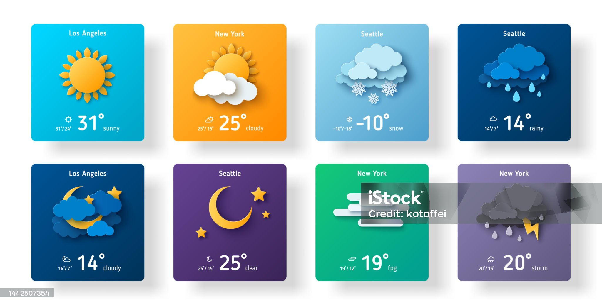

Projeto One Piece
Esta página web é uma homenagem aos personagens do popular anime "One Piece". O design é focado em proporcionar uma experiência interativa e visualmente atraente para os fãs da série.
Projeto App de Clima
O "App de Clima" é uma aplicação web elegante e responsiva, desenvolvida para fornecer informações meteorológicas atualizadas de qualquer cidade inserida pelo usuário. Este projeto utiliza HTML, CSS e JavaScript para criar uma interface de usuário intuitiva e uma experiência de usuário envolvente.